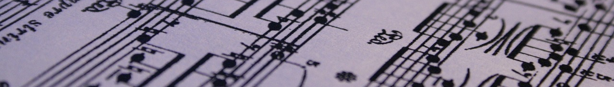

<div class="post">

<div class="post-info">
    <span>Escrit</span>
      <span>el&nbsp;</span><time datetime="{{ page.date }}">
    {{ page.date | date: "%-d" }}
    {% assign m = page.date | date: "%-m" %}
    {% case m %}
      {% when '1' %}de gener
      {% when '2' %}de febrer
      {% when '3' %}de març
      {% when '4' %}d'abril
      {% when '5' %}de maig
      {% when '6' %}de juny
      {% when '7' %}de juliol
      {% when '8' %}d'agost
      {% when '9' %}de setembre
      {% when '10' %}d'octubre
      {% when '11' %}de novembre
      {% when '12' %}de desembre
    {% endcase %}
    de {{ page.date | date: "%Y" }}
    </time>
  </div>
  <h1 class="post-title">{{ page.title }}</h1>
  <div class="post-line"></div>

  {{ content }}
</div>

{% if page.comments %}
  {% include disqus_comments.html %}
{% endif %}

<div class="pagination">
  {% if page.next.url %}
    <a href="{{ page.next.url | prepend: site.baseurl }}" class="left arrow">&#8592;</a>
  {% endif %}
  {% if page.previous.url %}
    <a href="{{ page.previous.url | prepend: site.baseurl }}" class="right arrow">&#8594;</a>
  {% endif %}

  <a href="#" class="top">Amunt</a>
</div>